Urban Big Data Analytics
Class 8Data Visualization and Web Mapping
July 30, 2018
Instructor: Andy Hong, PhD
Postdoctoral Research and Teaching Fellow
School of Population and Public Health
University of British Columbia
Assignment 4 out
- More hands-on training in R
- EDA and visualization
- Send your R code to my email
Data Visualization
What is data visualization?
- Representing data in a graphical format
- Transforming numbers into visuals
- Good visuals: simple, intuitive, and yet powerfully complex
- One good plot beats hundred tables!
Typical activities in a day
New York Times graphics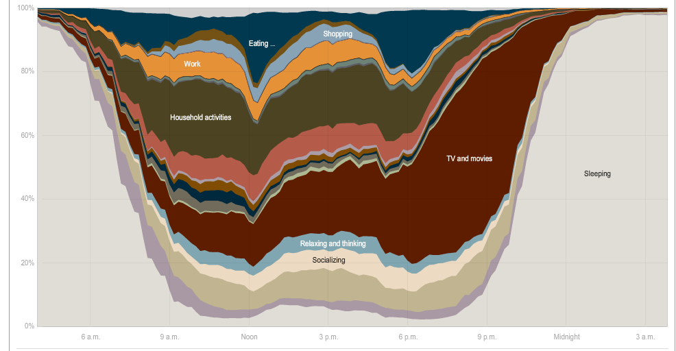
The rhythm of food
http://rhythm-of-food.net/peach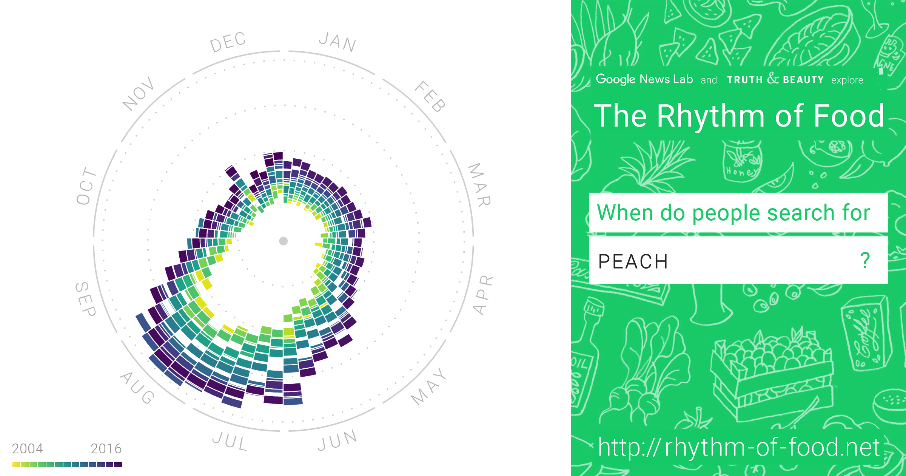
Data visualization basic
Adapted from Kieran Healy's data visualization book- Understand your data
- Bad graphics vs. good graphics
- Bad data vs. good data
- Misleading data
Tufte's 10 Rules

- Edward Tufte - Yale professor
- Living legend and expert in data visualization
- "The da Vinci of data"
- "Chart Master"
- "The Data Artist"
1. Show your data
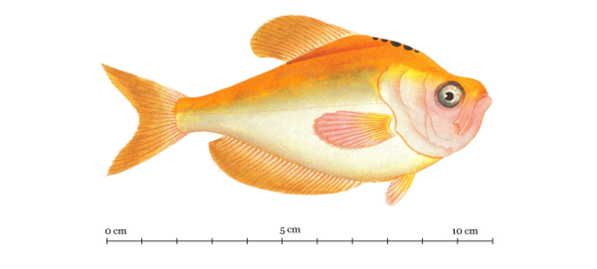
2. Use graphics
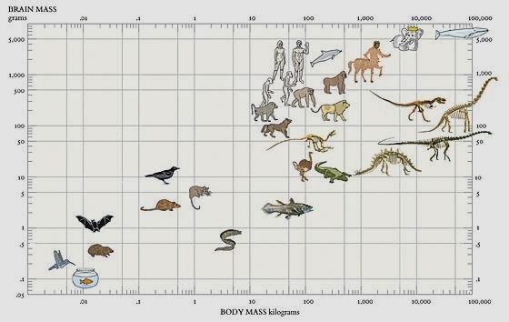
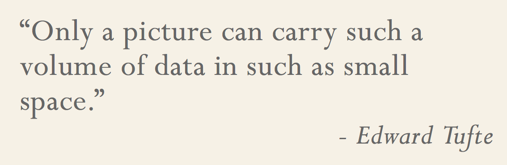
3. Avoid chartjunk
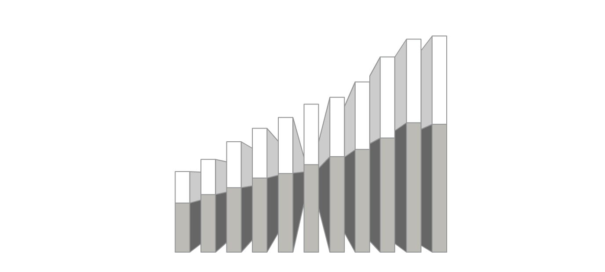
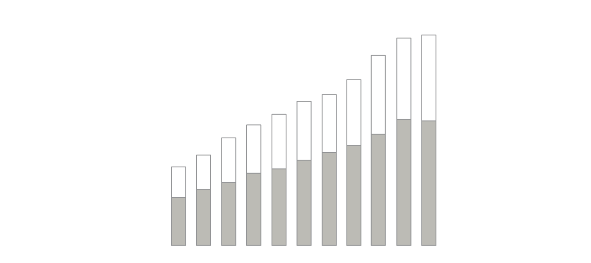
4. Utilize data-ink
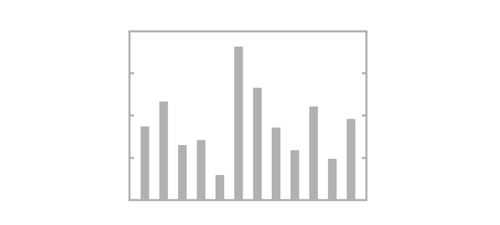
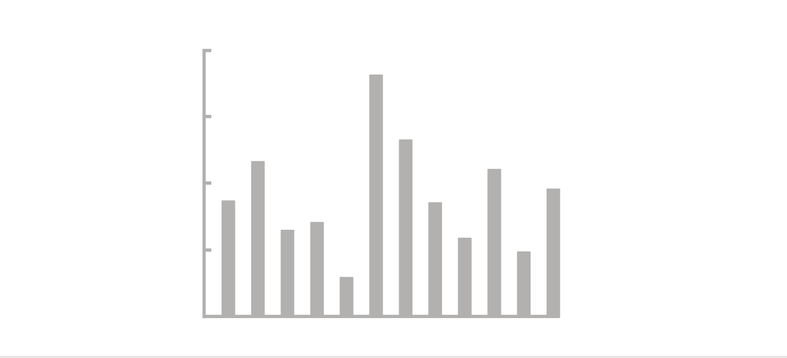
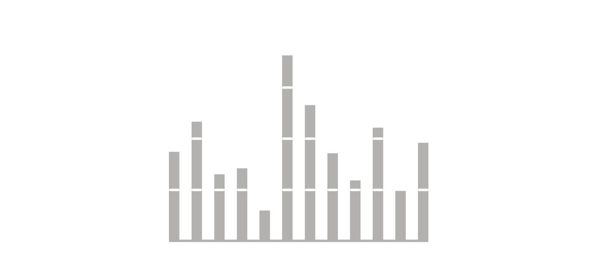
5. Use labels
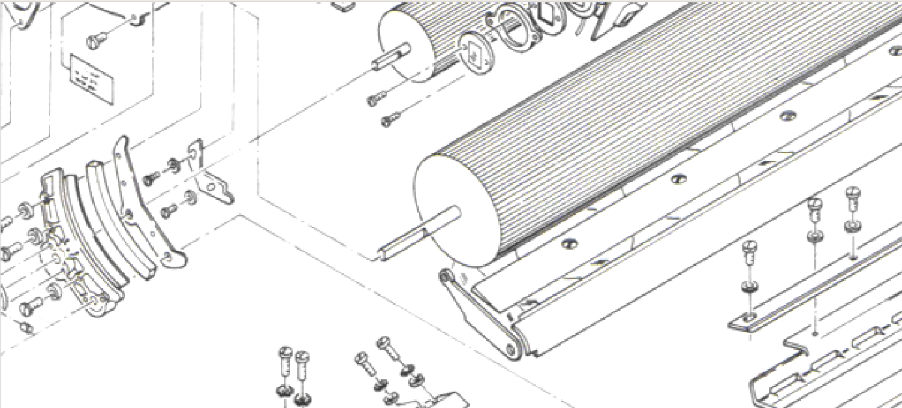
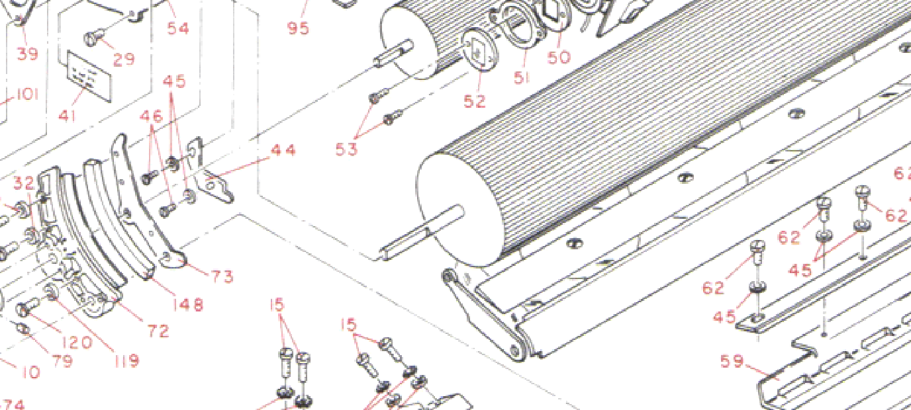
6. Utilize micro/macro
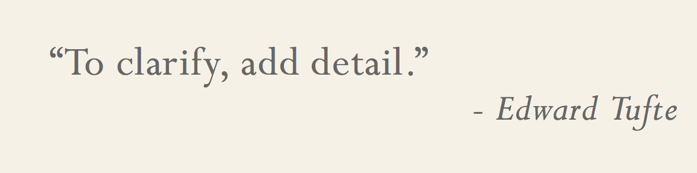
7. Separate layers
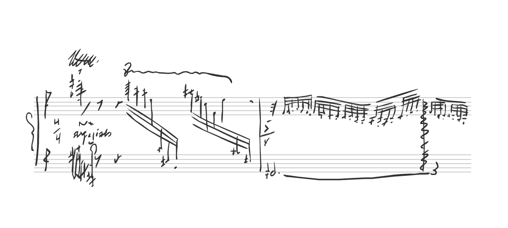
8. Use multiples
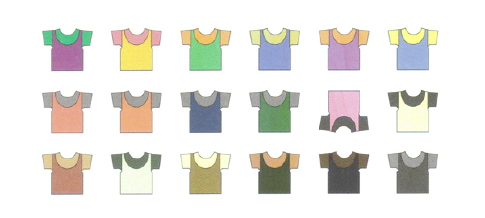
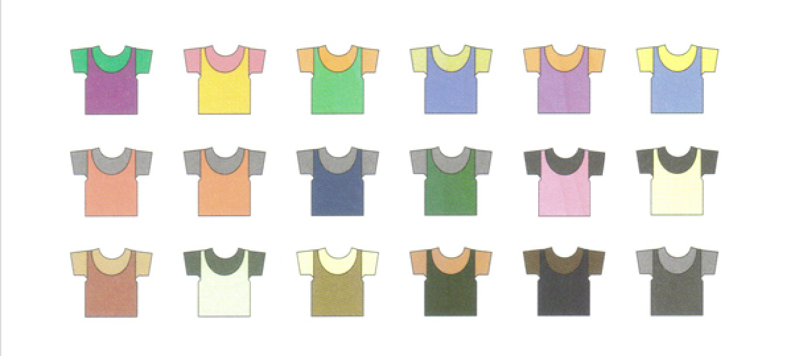

9. Utilize color
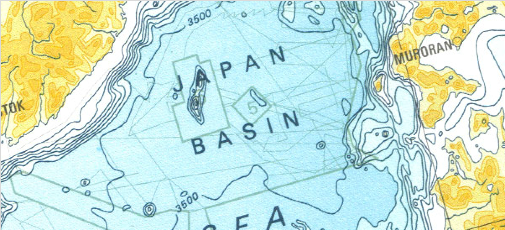
10. Understand narrative
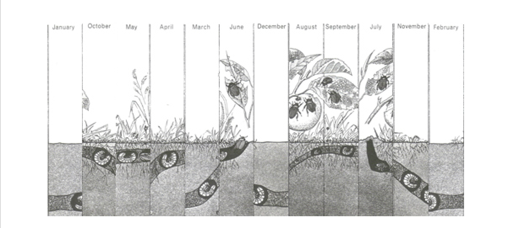
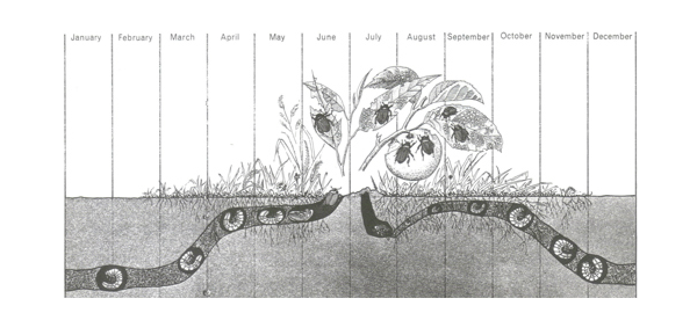
Any questions?
For all the course materials, go to urbanbigdata.github.io
18
10. Understand narrative